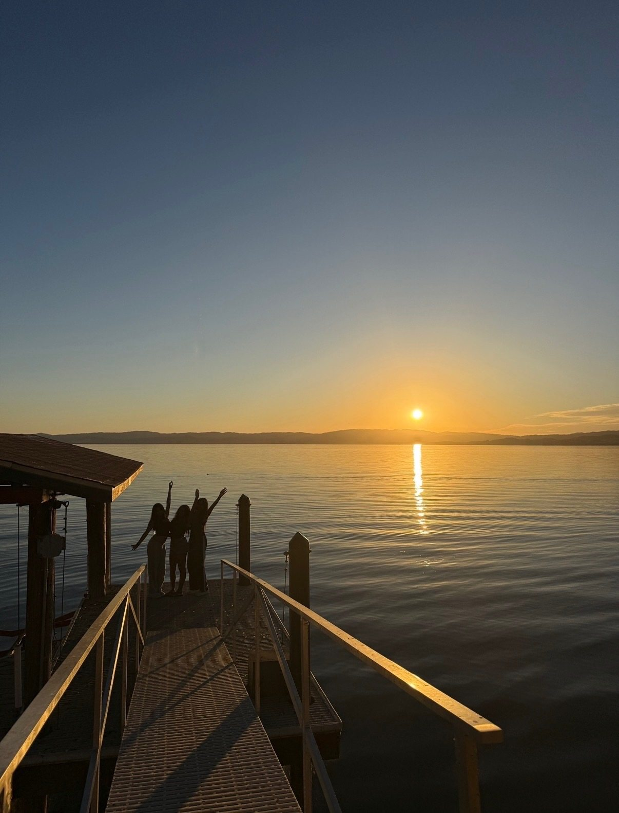
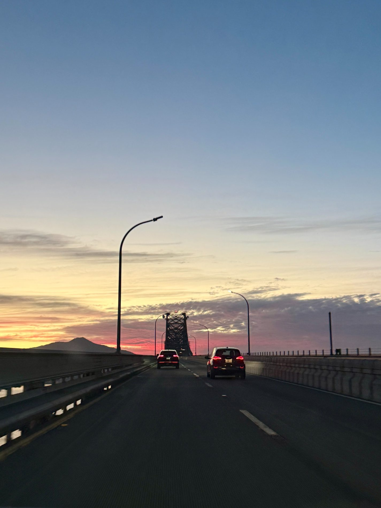
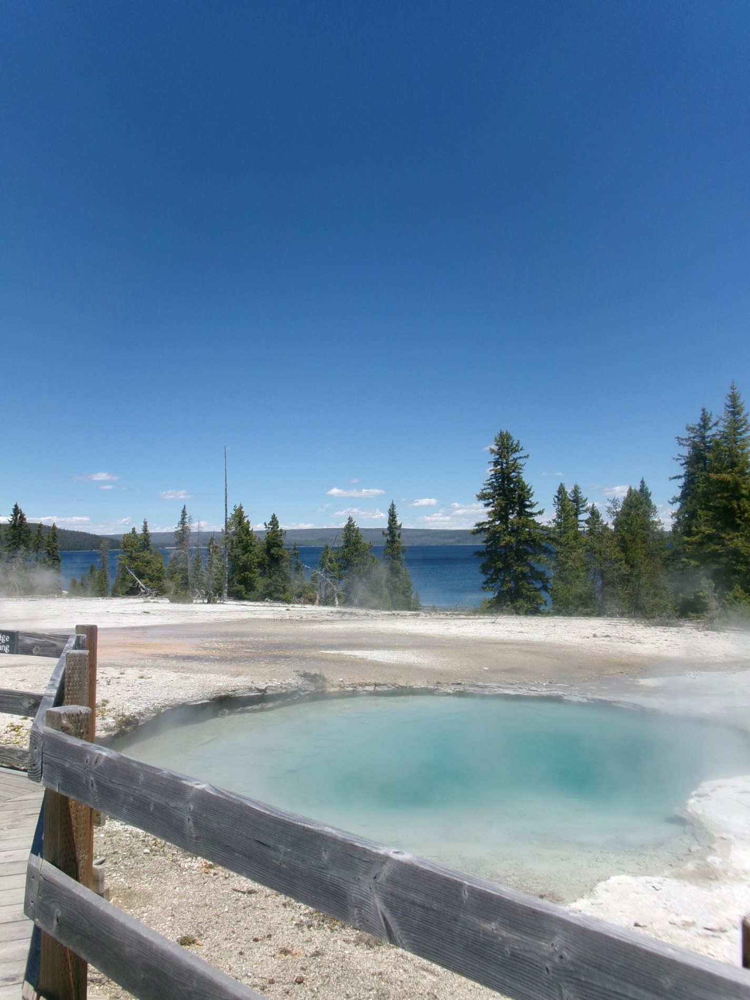
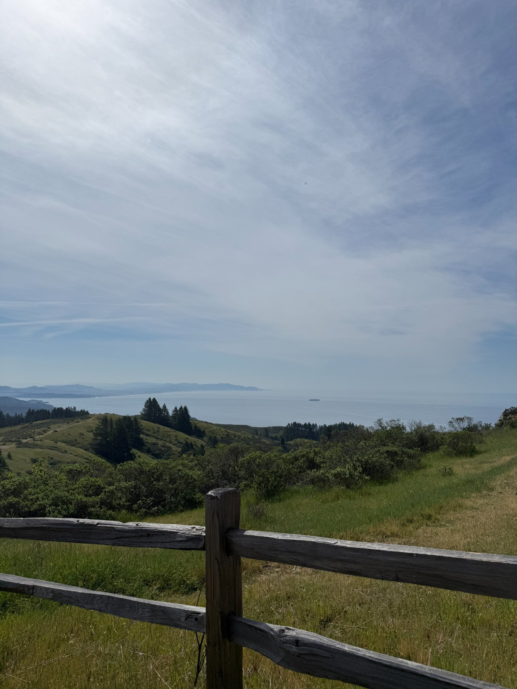

knaitai open initiative
exploring knowledge-native AI and prototyping Python-based runtime activation and retrieval mechanisms.
i'm abi, a data science student at uc berkeley. i work on software and AI projects, and i like photography, reading, and being outdoors.
i'm studying data science at uc berkeley with a minor in computer science. i'm interested in AI, accessible software, and how people use technology.
outside of class, you'll probably find me taking photos, sketching, cooking, hiking, reading, or hunting for matcha. i wanted a place to share both my projects and the photos i take.
updated october 2026
exploring knowledge-native AI and prototyping Python-based runtime activation and retrieval mechanisms.
working on mobile onboarding in React Native, from user journeys and Figma flows to reusable components.
getting deeper into data science, algorithms, economics, and how to turn classroom ideas into useful projects.
learning more about building AI-powered products and designing better interfaces.
a story to get lost in.
taking photos when i travel or go hiking.
hackathons, internships, and class projects.
an AI-powered accessibility platform that adapts web content based on reading behavior. built with React, FastAPI, Python, and AI tools.
an indoor navigation app with voice guidance and haptic feedback, designed with accessibility in mind.
built a local-first risk engine, natural-language extraction pipeline, and Python/Pandas ETL workflow spanning 5,265 validated NHANES records.
a few projects from my data science and computer science classes.
Two-part project exploring Cook County property data. I cleaned messy housing records, investigated patterns, engineered features, and built and evaluated models to predict sale prices.
0.571 training RMSE (log sale price)python · pandas · regressionread about this project ↗A Java simulation exploring when connected open sites form a path through a grid, with percolation statistics and visualization.
java · algorithmsread about this project ↗Two-part email classification project using text-derived features, exploratory analysis, logistic regression, and validation to distinguish spam from non-spam messages.
90.7% final training accuracy · up from 75.8%python · scikit-learn · classificationread about this project ↗some photos i’ve taken.




a few photos from my camera roll.
feel free to reach out about my projects or just say hi.